Hirono
Hirono · Iwate
Hirono
Highlighted on the Iwate map.
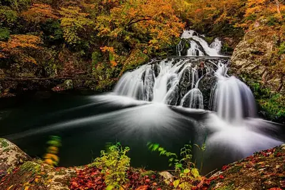
Stay
ゲストハウスはまなす亭
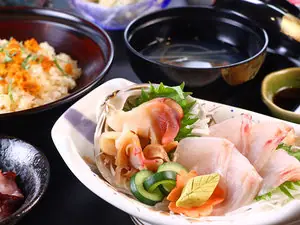
Gesutohausu Hamanasu Tei
Guesthouse in Hirono, Iwate.
Dining
はまなす亭 本店
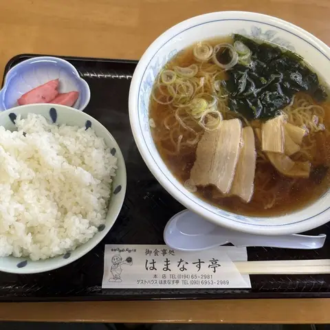
Hamanasu Tei Honten
Shokudo diner in Hirono, Iwate.
旬魚旬菜かめふく
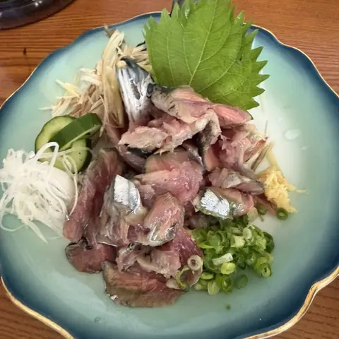
Shungyo Jun Na Kamefuku
Seafood restaurant in Hirono, Iwate.
磯料理 喜利屋
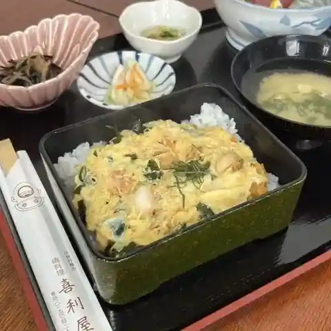
Iso Ryouri Ki Ri Ya
Seafood restaurant in Hirono, Iwate.
きのこの駅
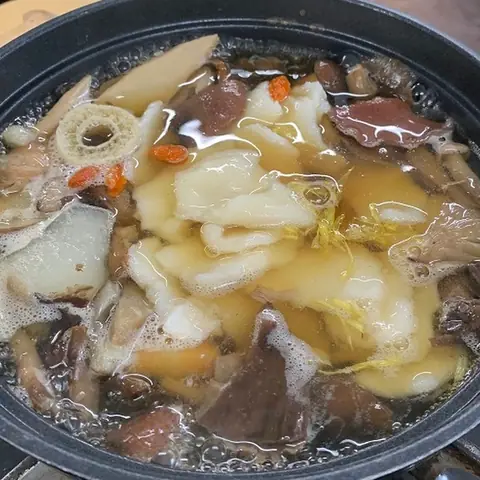
Kinokono Eki
Shokudo diner in Hirono, Iwate.
グリーンヒルおおの
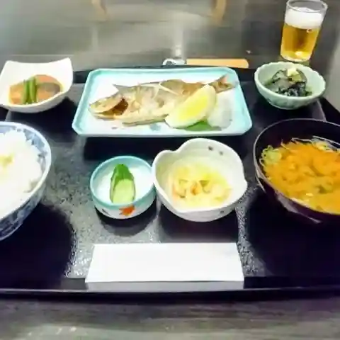
Guriinhiru Oono
Hotel restaurant in Hirono, Iwate.
山海亭
Sankai Tei
Izakaya in Hirono, Iwate.
喜利屋 ひろの水産会館店 ウニーク
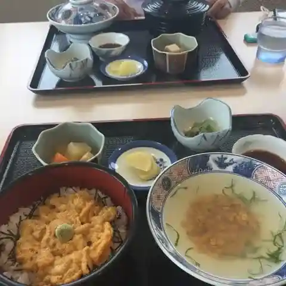
Ki Ri Ya Hirono Suisan Kaikan Mise Uniiku
Local-cuisine restaurant in Hirono, Iwate.
アグリパークおおさわ
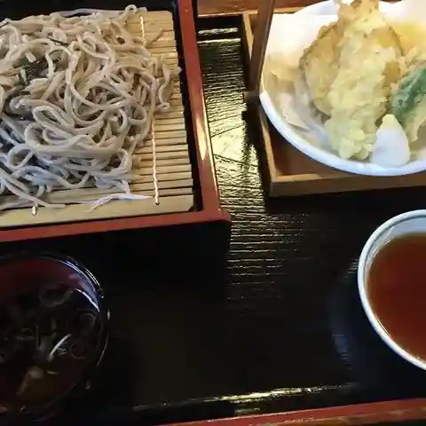
Aguripaaku Oosawa
Inn restaurant in Hirono, Iwate.
HIRONO GELATO
Hirono Gelato
Gelato and ice-cream shop in Hirono, Iwate.
食の館
Shokuno Kan
Japanese restaurant in Hirono, Iwate.
ちどり食堂
Chidori Shokudou
Shokudo diner in Hirono, Iwate.
カフェ オッホ
Kafe Ohho
Café in Hirono, Iwate.
おおの食の館
Oono Shokuno Kan
Ramen shop in Hirono, Iwate.
梅乃家食堂
Umeno Ie Shokudou
Shokudo diner in Hirono, Iwate.
かくれんぼ
Kakurenbo
Izakaya in Hirono, Iwate.
お食事処かみの
O Shokuji Tokoro Kamino
Ramen shop in Hirono, Iwate.
喫茶とスペース ヒロノバ
Kissa To Supeesu Hironoba
Café in Hirono, Iwate.
Cafe Cocoyo
Cafe Cocoyo
Café in Hirono, Iwate.
麺介
Men Suke
Ramen shop in Hirono, Iwate.
焼肉レストラン中山
Yakiniku Resutoran Nakayama
Yakiniku (grilled meat) restaurant in Hirono, Iwate.
宏八屋
Hiroshi Hachi Ya
Deli in Hirono, Iwate.
Sights
Hamanasu-tei Main Store
Hamanasutei (main store) is open for business in an orange prefabricated store.
Edogahama Donburi
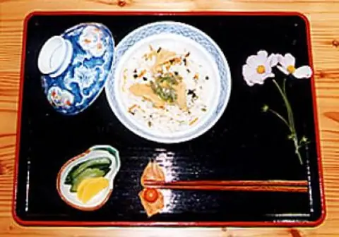
A new local cuisine certified as a "Food Master" in 1998. A rice bowl full of seafood, made with plenty of sea urchin, a specialty of Hirono Town.
Kiriya Seafood Restaurant
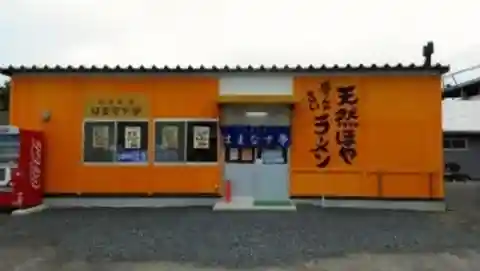
The restaurant's popular diver set meal is a restaurant where you can enjoy sea squirt in a variety of ways, including sashimi, grilled, and fried sea squirt.
Ono Hometown Products Center
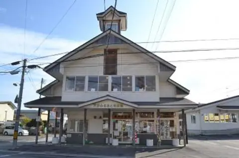
We sell Ohno Woodworking, charcoal, honey, handmade ice cream, local specialties, etc.
Yume Milk / Yume Yogurt
Delicious milk that is confidently recommended by dairy farmers in the dairy kingdom of Iwate.
Yuuki Center
A direct-from-the-farm facility with a wide selection of fresh organic vegetables.
Kohachiya
The sea in Taneichi is lively! The luxurious delicacies of sea urchin and abalone are specialties, and you can eat them fresh.
Hirono Fisheries Hall Uniiku
Opened on March 26, 2014 as a new tourism information and experience exchange base for Hirono Town.
Taneichi Farm-Direct Fureai Plaza
It's a lively farm-to-table center filled with seafood and mountain produce, and locals visit every day because of the prices and freshness of the products.
Taneichi Seaside Park Campsite
A campsite located at Taneichi Seaside Park. The calm sea with white sand stretches out in front of you.
Konbu-maki (Kelp Rolls)
This is a traditional dish from Hirono Town.
Gardening Workshop
There is a large workshop where you can enjoy viewing seasonal flowers, and there is a wide variety of flowers available throughout the year, which you can also purchase.
Ohno Industrial Design Center
This facility opened in June 1991 to carry out training, research, and production with the aim of creating products that enrich people's lives.
Nanbu Moguri (Helmet Diving)
Taneichi is the birthplace of the Southern Divers and has a long history.
Hirono Town Taneichi History and Folklore Museum
Hirono Town Taneichi History and Folklore Museum
Okaya Inari Shrine
An old shrine with a long history, located in a forest of old trees.
Mt. Kujihira
Kujihiradake is 706m above sea level. This is a great hiking course that is 5km from the trailhead to the top and takes about an hour to walk.
Tainai Kuguri Rock Passage
Tainai Kuguri, located at the 8th station of Mt. Kujihiradake, has strangely shaped rocks measuring 10 meters square and lined up at 50 centimeter intervals, and it is said that walking through these rocks will relieve your lower back pain.
Nakano Shirataki
Nakano Shirataki is a large waterfall with two tiers, the upper waterfall is 27 meters high and 8 meters wide, and the lower waterfall is 6 meters high and 12 meters wide.
Takizawa Otaki
A 20-meter-high, 15-meter-wide waterfall surrounded by virgin forest behind Takizawa Shrine.
Window Rock
It is an artistic rock formation created by the rough sea of the north.
Yamato no Oka Forest Park
Yamato no Oka Forest Park is located in the middle of Kujihira-dake Mountain.